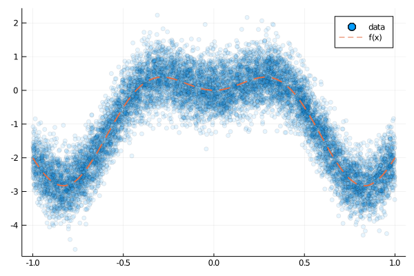
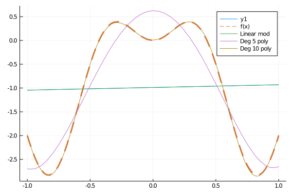
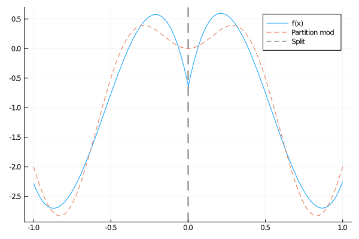
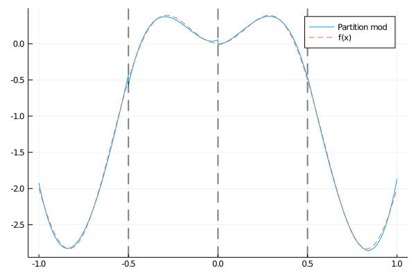

Regression
The objective of regression is to model the relationship between a set of predictor and response variables. Once trained, the regression model can be used to predict the response variable, given a new predictor variable. RecursivePartition implements a variety of regression models, however its most notable feature is the PartitionModel type. This model is fitted by partitioning the space of predictor variables (see Recursive Partitioning for a visualization of this process) and fitting a flexible model within each subregion. One can think of this as a divide and conquer approach to learning complex relationships between predictors and responses.
Standard linear models will first be introduced, primarily motivating the use of the Polynomial Chaos Basis expansion as a method for incorporating a non-linear structure into regression models. The Partitioned Models tutorial then shows how we can aggregate the linear models across a partitioned space.
Note that the examples in this tutorial are at most 2-dimensional for visualization purposes. However, usage is identical for higher dimensional data.
Bayesian Linear Models
All the Bayesian linear models implemented in RecursivePartition currently assume that the predictor variables are Normally distributed with a mean given by some unknown function i.e.
\[y = f(\boldsymbol{x}) + ϵ, \quad ϵ \sim \mathcal{N}(0, σ^2)\]
For this tutorial we choose an arbitrarily choose the mean function
\[f(x) = 2 x \text{sin}(2 π x) - 2 x^2\]
and generate a random data set.
using RecursivePartition, Plots, Random
Random.seed!(100) # Set seed for reproducability
N = 10000
SD = 0.5
f(x) = 2 * sin(2 * π * x[1]) * x[1] - 2 * x[1]^2
x, y = gendat(N, SD, f, 1; bounds=[-1.0, 1.0])
plot(x, y, seriestype=:scatter, alpha=0.1, label="data")
plot!(f, xlims=[-1.0, 1.0], lw=2, lty=2, s=:dash, label="f(x)")The figure below shows the plot outputted by the above code.

Our job us thus to use the noisy blue data points to approximated the true mean of the data (given by the dashed red line). It is important to remember that the mean function $f$ is used only to generate the data; it is unknown to the regression models.
In this tutorial we will fit three different Bayesian models to the dataset shown in the figure above.
- A linear model.
- An order 5 polynomial regression.
- An order 10 polynomial regression.
In a polynomial regression we take the original predictor variables and transform them using a polynomial basis (see Polynomial Chaos Basis). Simply put, we are constructing the "best" polynomial which approximates $f$.
# Fit a linear model
linearmod = BayesLinearModel(x, y)
linfun = predfun(linearmod)
# For plotting purposes, we need a function which accepts a float, not an
# array...
linfun_flat(x) = linfun([x])
# Fit an order 5 and 10 polynomial model
polymod5 = PolyBLM(x, y, 5, [-1.0, 1.0])
polymod10 = PolyBLM(x, y, 10, [-1.0, 1.0])
polyfun5 = predfun(polymod5)
polyfun10 = predfun(polymod10)
polyfun5_flat(x) = polyfun5([x])
polyfun10_flat(x) = polyfun10([x])
# Create plot
plot(linfun1, xlims=[-1.0, 1.0])
plot!(f, xlims=[-1.0, 1.0], label="f(x)", lw=3, s=:dash)
plot!(linfun_flat, xlims=[-1.0, 1.0], label="Linear mod")
plot!(polyfun5_flat, xlims=[-1.0, 1.0], label="Deg 5 poly")
plot!(polyfun10_flat, xlims=[-1.0, 1.0], label="Deg 10 poly")In the above code, [predfun] outputs a function which accepts a vector argument. This function takes a predictor and ouputs the predicted response according to the model. The figure below shows the plot outputted using this code.

Firstly we note that (unsurprisingly) the linear model performs very poorly here. This is because using BayesLinearModel restricts our model to a (linear) straight line, however the structure of the data is clearly non-linear. The order 5 polynomial model does a reasonable job of approximating $f$, however our model is still not flexible enough. Once we increase the order (and hence the complexity of the model) to 10, we finally have a model which accurately approximates $f$.
With the model trained, we can predict response variables as follows.
Xtest, ytest = gendat(N, SD, f, 1; bounds=[-1.0, 1.0])
ytest_approx = predict(polymod10, Xtest)Partitioned Models
Although the polynomial regression models above may seem appealing, they quickly become impractical as the dimension of the predictor variables (and the degree of the model) increases. As an alternative approach, we can partition the space into separate regions and fit low order polynomial model within each one. For example, the following code will divide the data in half at 0, then fit an order 3 polynomial regression inside each half.
# Construct partition
P = [[-1.0 1.0]] # Define the whole space (x lies between -1 and 1).
insert_knot!(P, 1, 1, 0.0) # Split in the middle.
# Fit partitioned polynomial models
partition_model = partition_polyblm(x, y, P; degmax=3)We no longer provide code for producing figures, as the process is essentially the same. The figure below should the partitioned approximation

This approximation isn't terrible, but the natural response is to wonder whether we should partition the space further. In higher dimensional settings we don't have the luxury of plotting the function and choosing a sensible partition. Luckily, RecursivePartition implements a novel algorithm for dividing up the space automatically.
automod = auto_partition_polyblm(x, y, [-1.0, 1.0])which outputs the following model.

The automatic partitioning algorithm has determined that each sub-region benefits from one more split. Currently the automatic partitioning algorithm is only capable of splitting in the center of a sub-region.
This simple example is merely to demonstrate the rationale behind these recursively partitioned regression models. The true benefit of these models comes when we move to higher dimensional settings. Using automatic partitioning, we can adapt to the complexity of the data, removing the need to tune the complexity of the model manually. Partitioned models are a type of non-parametric model, meaning they are used when little is known about the structure of the data, and hence a highly flexible model is required.
Functions
RecursivePartition.BLMHyper — TypeBLMHyper(dim::Int64; shape::Float64=0.001, scale::Float64=0.001)
BLMHyper(coeff::Vector{Float64}, cov::Matrix{Float64},
covinv::Matrix{Floa64}, shape::Float64, scale::Float64)Return container for the hyperparamters associated with a Bayesian linear model.
If only the dimension/shape/scale parameters are supplied, the default constructor uses the identity matrix as the covariance matrix, and a vector of zeros for the the prior mean of the model coefficients.
See also: BayesLinearModel
RecursivePartition.BayesLinearModel — TypeBayesLinearModel(X::Matrix{Float64}, y::Vector{Float64}; shape::Float64=0.001,
scale::Float64=0.001)
BayesLinearModel(X::Matrix{Float64}, y::Vector{Float64}, prior::BLMHyper)Construct BayesLinearModel object. One must only supply the dimension of the linear model, and an optional set of prior hyper parameters. Once the model is constructed, fit! can be used to update it with additional data.
This object implements the well known Bayesian Linear Model with Gaussian responses and unknown variance. A Gaussian/inverse-gamma prior is placed on the model coefficients/variance respectively.
Examples
coeff = [1.0, 2.0, 3.0]
f(x) = coeff[1] + coeff[2:3]' * x # Truly linear model
SD = 1.0
X, y = gendat(50000, SD, f, 2)
model = BayesLinearModel(X, y)
get_coeffpost(model)
# output
3-element Array{Float64,1}:
0.997262172068708
1.9957265287418318
3.0063668906195202RecursivePartition.LinearModel — TypeAbstract type encompassing different linear models.
See also: BayesLinearModel, PolyBLM
RecursivePartition.PartitionHyper — TypePartitionHyper(shape::Float64, scale::Float64,
logdet::Union{Nothing, Vector{Float64}})Container for hyperparamers which are shared across all subregion models.
Shape and scale describe the (prior/posterior) distribution of the unknown noise across the entire space. Each local subregion model will have its own independent shape/scale parameters, which are aggregated with the other subregions to compute the shared hyperparameters.
RecursivePartition.PartitionModel — TypePartitionModel{T <: LinearModel}Struct containing a recursive partition and LinearModel's relating to each subset. Objects of this type are easiest to generate using partition_blm, partition_polyblm.
Each model is assumed to be independent conditional on the unknown noise i.e. the noise is assumed to the constant (but unknown) across the entire space. Intuitively, this means that the models should be adjusted that no one subregion model approximates the noise significantly differently from the rest of the subregions (this would be an indication of under/over-fitting).
RecursivePartition.PolyBLM — TypePolyBLM(X, y, degmax, bounds; maxparam=200, shape=0.001, scale0.001,
priorgen=identity_hyper)Construct a linear model using features derrived from the Polynomial Chaos Basis.
A bound on the maximum number of model parameters, maxparam, is specified by the user. If the number of parameters exceeds this bound, the LARS algorithm is used to choose the "best" set of parameters satisfying the bound.
Since we do not know which/how many parameters will be included in the model (we only that the number of parameters is bounded by maxparam), it is not possible to supply an object of type BLMHyper as a prior distribution. Instead, the argument priorgen accepts a function which specifies how the prior distribution should be generated. priorgen must have the signature
priorgen(indices::Vector{MVPIndex}, shape::Float64, scale::Float64)and return an object of type BLMHyper
See also: BayesLinearModel, BLMHyper, MVPIndex
RecursivePartition.auto_partition_blm — Methodautopartitionblm(X::Matrix{Float64}, y::Vector{Float64}, bounds::Union{Matrix{Float64}, Vector{Float64}}; mindat=nothing, Kmax=200, shape=0.001, scale=0.001, verbose=false) autopartitionblm(X::Matrix{Float64}, y::Vector{Float64}, bounds::Union{Matrix{Float64}, Vector{Float64}}, prior::BLMHyper; mindat=nothing, Kmax=200, verbose=false)
Adaptively contruct a partition and fit a PartitionModel, using BayesLinearModel models in each subregion.
RecursivePartition.auto_partition_polyblm — Methodauto_partition_polyblm(X::Matrix{Float64}, y::Vector{Float64},
bounds::Union{Matrix{Float64}, Vector{Float64}}; degmax::Int64=3,
maxparam::Int64=200, priorgen::Function=identity_hyper,
shape::Float64=0.001, scale::Float64=0.001, mindat=nothing, Kmax=200,
verbose=false)Adaptively contruct a partition and fit a PartitionModel, using PolyBLM models in each subregion.
RecursivePartition.fit! — Methodfit!(mod::BayesLinearModel, X::Matrix{Float64}, y::Vector{Float64})Update a Bayesian Linear Model object with data matrix and response variables.
See also: BayesLinearModel
Examples
coeff = [1.0, 2.0, 3.0]
f(x) = coeff[1] + coeff[2:3]' * x # Truly linear model
SD = 1.0
X1, y1 = gendat(25000, SD, f, 2)
X2, y2 = gendat(25000, SD, f, 2)
model = BayesLinearModel(X1, y1) # Fit initial model
fit!(model, X2, y2) # Update model with more data
get_coeffpost(model)
# output
3-element Array{Float64,1}:
0.996650221433608
1.9907052757630952
2.9924622031151826RecursivePartition.logevidence — Methodlogevidence(mod::LinearModel)Compute the Bayesian Model Evidence/Marginal Likelihood.
RecursivePartition.partition_blm — Methodpartition_blm(X::Matrix{Float64}, y::Vector{Float64},
P::Matvec; shape::Float64=0.001, scale::Float64=0.001)
partition_blm(X::Matrix{Float64}, y::Vector{Float64},
P::Matvec, prior::BLMHyper)Construct a PartitionModel object, in which the subregion models are comprised of BayesLinearModel models with a fixed (and prespecified) partition.
RecursivePartition.partition_polyblm — Methodpartition_polyblm(X::Matrix{Float64}, y::Vector{Float64},
P::Matvec; degmax::Int64=3, maxparam::Int64=200,
priorgen::Function=identity_hyper, shape::Float64=0.001,
scale::Float64=0.001)Construct a PartitionModel object, in which the subregion models are comprised of PolyBLM models with a fixed (and prespecified) partition.
RecursivePartition.predfun — Methodpredfun(mod::LinearModel)Return a function which predicts response variables given an input vector x.
RecursivePartition.predict — Methodpredict(mod::BayesLinearModel, X::Matrix{Float64})Predict responses based on data matrix X. ```
RecursivePartition.split_subset — Methodsplit_subset(mod::PartitionModel{T}, stored::Vector{SubsetMem{T}},
k::Int64, dim::Int64, loc::Float64, mindat::Int64,
args::ModArgs) where T <: LinearModelReturn a PartitionModel where the k'th subset has been divided in a specficied dimension/location.